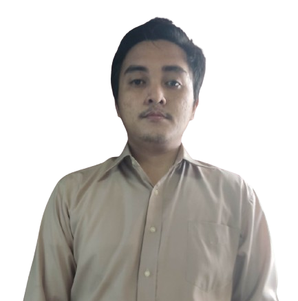

Name: Knicko Lance M. Cruda
E-mail: knickocruda@gmail.com
GitHub: KCruda
Phone: (+63) 9101568928
Address: P-3 Libertad, Butuan City

About Me
Hello! I am a passionate web developer with a keen interest in creating innovative solutions that enhance user experience. With a background in Information Technology, I enjoy exploring new technologies and continuously improving my skills. My goal is to leverage my expertise to contribute to impactful projects while fostering a collaborative work environment.
In my free time, I love reading, coding personal projects, and engaging with the tech community. I'm always eager to learn and share knowledge with others.